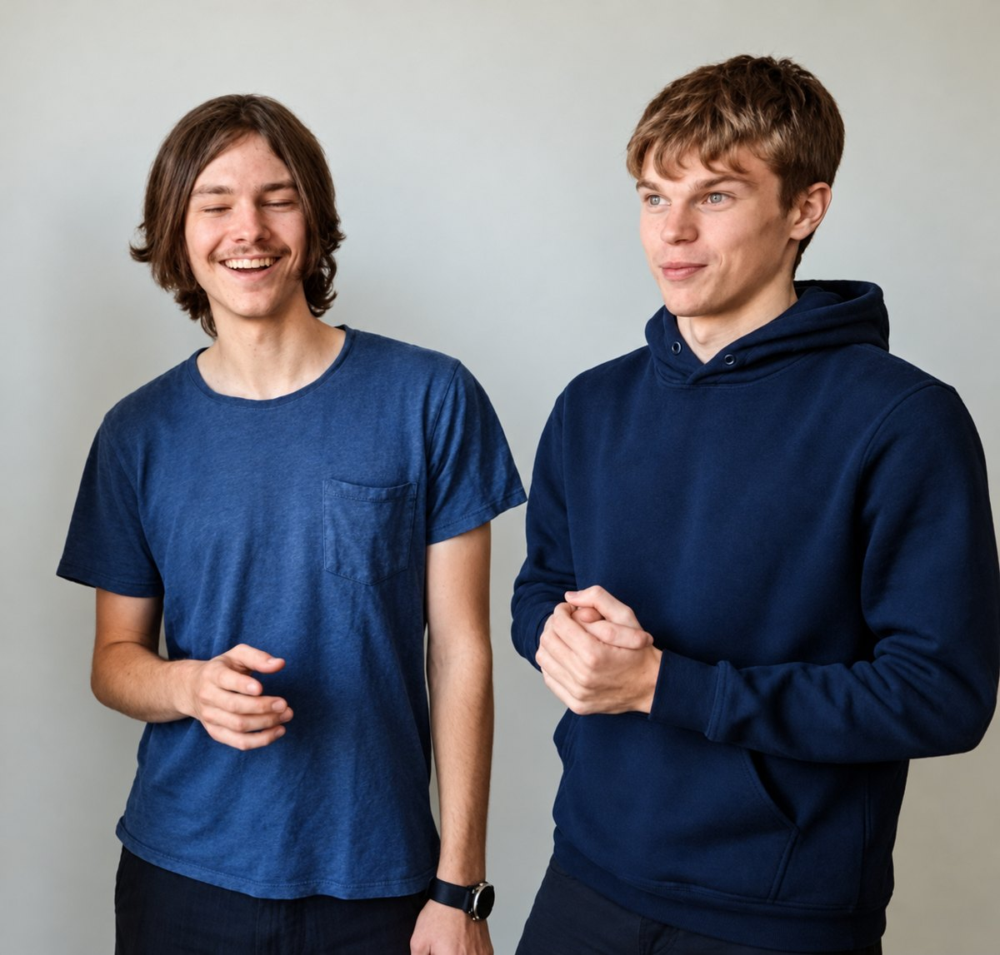

Egil Snodgrass
MedgrundareLeder kundprojekten och kopplingarna. Har pausat civilingenjörsstudierna i mjukvaruteknik vid Umeå universitet för att fokusera helt på SNPS och det snabbrörliga AI-ekosystemet.
Vide Jacobson
MedgrundareBygger kopplingarna till affärssystemen. Läser civilingenjör i mjukvaruteknik vid Umeå universitet.